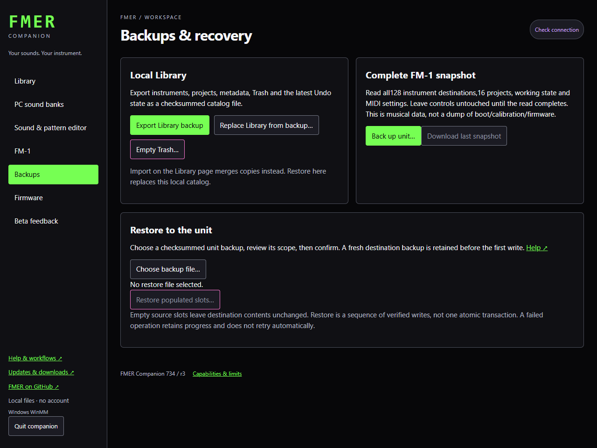
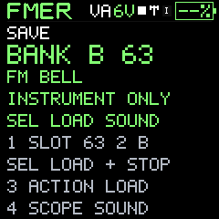

Care and updates
Backups, restore and recovery
Different backup files protect different data; restore scope is shown before writing.
- Catalog file: PC library items, metadata and any included sound snapshots.
- PC bank backup: the companion's 64 DEFAULT and 64 USER slots.
- Unit backup: all 128 instrument positions, 16 project positions, working native state and persistent MIDI settings.
- Native record: one FMER state/project payload, without the full banks.
- FX profile: effect parameters and their serial order.
- Firmware package: application code for an exact qualified installation path, not a music backup.
A unit backup reads every position and verifies that storage generation, working-state generation and MIDI settings remained stable. Leave the controls untouched. An inconsistent capture is refused. Checksums and native-record validation are checked before restore.
Unit restore first captures and commits a complete backup of the destination. It then writes populated source slots, verifies writes through the transport, restores working state and persists MIDI. Empty source positions leave existing destination contents unchanged: this is an overlay, not an exact erase. Current firmware has no per-slot deletion command.
Restore and two-slot swaps are not atomic. On failure, completed writes and the pre-operation backup remain in the operation artifacts. There is no automatic retry or rollback that could overwrite an uncertain device state. Inspect the result and read the device before deciding what to retry.
Local catalog/bank changes use revision checks so a stale tab cannot overwrite newer work. Refresh on conflict. Previous files and diagnostic journals help recovery; do not remove locks while another process is writing. Sudden-power-loss qualification of every hardware storage path remains open.
729 complete unit backups include the personal FX default. Older unit archives preserve the destination default when restored. Native sound/project files remain version9 and do not include this global preference. Saving global settings upgrades bank metadata to FMERBNK4; older firmware cannot read that metadata. Use a verified pre-update backup and explicit rollback/migration procedure, not an unreviewed downgrade.
A two-unit rig
- Connect only the first instrument. Choose Check connection and make a complete unit backup before updating.
- Keep that backup under a distinct filename containing the instrument name and date. Library collections can also separate instruments and projects for each unit.
- Install the included firmware, wait for verified completion, then check the instrument banks and projects.
- Disconnect it and repeat for the second instrument. Retain each unit's original backup separately.
- Reconnect the instruments for performance and select their USB Link master/receiver roles as described in the USB Link article.
Copying a project alone does not copy its referenced sounds. Use the complete backup/restore workflow when appropriate, or transfer its sounds deliberately to matching instrument slots. Review every restore destination; a restore writes populated slots and is not a merge of two instruments.


